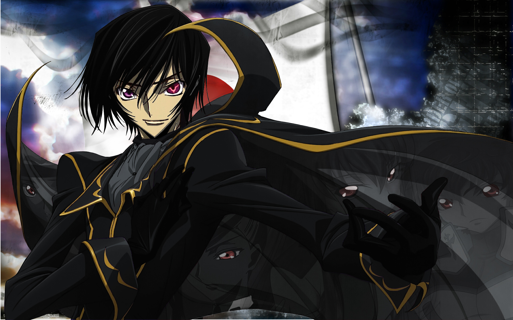
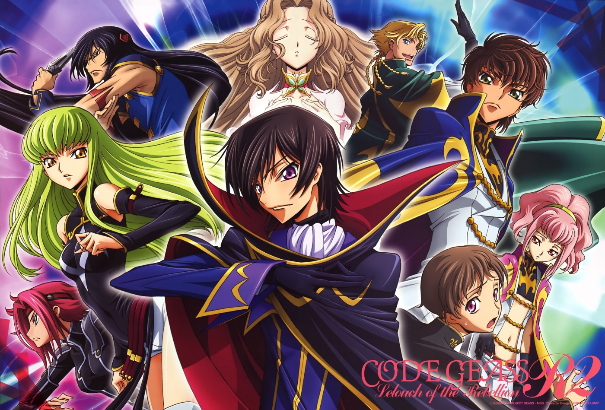
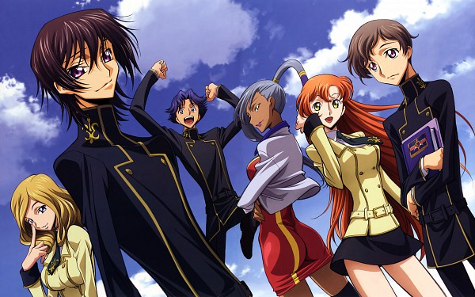
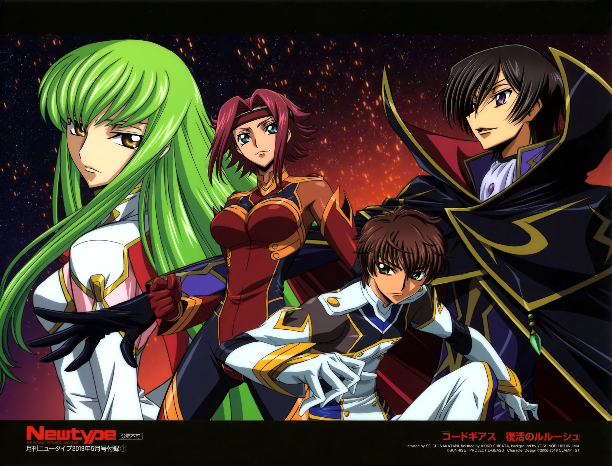

Kōdo Giasu
Galeria zdjęć:
   
Spis treści:
Czym jest Code Geass
Code Geass: Lelouch of the Rebellion (jap. コードギアス 反逆のルルーシュ Kōdo Giasu: Hangyaku no Rurūshu) – anime stworzone przez studio Sunrise,
reżyserowane przez Gorō Taniguchiego i napisane przez Ichirō Ōkouchiego.
Ogólny zarys wyglądu postaci został stworzony przez grupę Clamp. W Polsce pierwszy sezon anime został wydany bezpośrednio na DVD przez Anime Virtual w 2010 roku pod tytułem:
Code Geass: Lelouch of the Rebellion.
Anime Code Geass wygrało nagrodę Tokyo Anime Award w 2007 roku w kategorii najlepsze anime.
Dwa lata później zwyciężyło w tej samej kategorii, a także w kategorii najlepszy scenariusz. W cyklu Anime Grand Prix, organizowanym przez magazyn Animage, Code Geass zdobył trzy nagrody za najlepsze anime w latach: 2006, 2007 i 2008
. Ponadto odcinki 25. („Zero” w roku 2007) i 50. („Re” w roku 2008) otrzymały nagrody w kategorii najlepszy odcinek.
W tych samych latach, anime otrzymało także wyróżnienie w kategorii najlepsze anime telewizyjne, na festiwalu Animation Kobe.
W sierpniu 2008 roku, studio Bandai Visual ogłosiło, że sprzedało ponad 900 tys. egzemplarzy płyt DVD i Blue-Ray związanymi z Code Geassem.
Według serwisu Amazon.com, w 2008 roku Code Geass był czwartym najlepiej sprzedającym się anime na płytach DVD. W Polsce anime zostało przychylnie ocenione przez serwis tanuki.pl – otrzymało 10/10 w ocenie recenzenta i 8/10 w ocenie redakcji.
27 listopada 2016 roku, podczas uroczystości obchodzonej z okazji 10. rocznicy publikacji Code Geass: Lelouch of the Rebellion, studio Sunrise poinformowało o pracach nad:
trylogią omawiającą wszystkie 50 odcinków 2 sezonów anime, oraz 3 sezonem, który ma się ukazać pod nazwą Code Geass: Lelouch of the Revival
reżyserowane przez Gorō Taniguchiego i napisane przez Ichirō Ōkouchiego.
Ogólny zarys wyglądu postaci został stworzony przez grupę Clamp. W Polsce pierwszy sezon anime został wydany bezpośrednio na DVD przez Anime Virtual w 2010 roku pod tytułem:
Code Geass: Lelouch of the Rebellion.
Anime Code Geass wygrało nagrodę Tokyo Anime Award w 2007 roku w kategorii najlepsze anime.
Dwa lata później zwyciężyło w tej samej kategorii, a także w kategorii najlepszy scenariusz. W cyklu Anime Grand Prix, organizowanym przez magazyn Animage, Code Geass zdobył trzy nagrody za najlepsze anime w latach: 2006, 2007 i 2008
. Ponadto odcinki 25. („Zero” w roku 2007) i 50. („Re” w roku 2008) otrzymały nagrody w kategorii najlepszy odcinek.
W tych samych latach, anime otrzymało także wyróżnienie w kategorii najlepsze anime telewizyjne, na festiwalu Animation Kobe.
W sierpniu 2008 roku, studio Bandai Visual ogłosiło, że sprzedało ponad 900 tys. egzemplarzy płyt DVD i Blue-Ray związanymi z Code Geassem.
Według serwisu Amazon.com, w 2008 roku Code Geass był czwartym najlepiej sprzedającym się anime na płytach DVD. W Polsce anime zostało przychylnie ocenione przez serwis tanuki.pl – otrzymało 10/10 w ocenie recenzenta i 8/10 w ocenie redakcji.
27 listopada 2016 roku, podczas uroczystości obchodzonej z okazji 10. rocznicy publikacji Code Geass: Lelouch of the Rebellion, studio Sunrise poinformowało o pracach nad:
trylogią omawiającą wszystkie 50 odcinków 2 sezonów anime, oraz 3 sezonem, który ma się ukazać pod nazwą Code Geass: Lelouch of the Revival
Powrót na górę strony
Fabuła
Dnia 10 sierpnia roku 2010 a.t.b. (imperialny kalendarz, Ascension Throne Britannia czyli wstąpienie na tron Brytanii, który różni się od kalendarza gregoriańskiego o 50 lat),
Święte Imperium Brytyjskie zmiażdżyło siły wojskowe i podbiło Japonię w przeciągu niecałego miesiąca przy pomocy nowego typu broni,
olbrzymich robotów zwanych Knightmare Frame. W wyniku tego Japonia straciła swoją niepodległość, swoje prawa i nawet swoją nazwę, zostając mianowana "Strefą 11" Imperium Brytyjskiego.
Japończycy, przemianowani teraz na "Jedenastostrefowców", są zmuszeni do życia w ubóstwie, gdy w tym samym czasie osiedli tu Brytyjczycy żyją w luksusowych dzielnicach.
Nic dziwnego, że powstają ruchy oporu, jednak nie mają one zbyt dużej siły przebicia. Brytyjski student, Lelouch Lamperouge zostaje przypadkiem uwikłany w jedną z akcji terrorystycznych przeprowadzanych przez Japończyków przeciwko okupantowi.
Zostaje schwytany przez siły Brytanii i ma zostać rozstrzelany za popieranie terrorystów. Życie ratuje mu tajemnicza dziewczyna, która obdarowuje go mocą Geass:
Lelouch może wydać każdemu dowolny rozkaz i zostanie on bezwzględnie wykonany. Młody Lamperouge staje na czele japońskiego powstania przeciwko Imperium:
okazuje się jednak, że jego prawdziwe imię to Lelouch vi Britannia i jest 17. w kolejności sukcesji do tronu Brytanii.
Wypędzony z rodzinnego kraju pragnie tylko jednego – zemsty na swoim ojcu,
brytyjskim Imperatorze oraz stworzenia świata, w którym jego siostra Nunnally będzie mogła żyć szczęśliwie.
Święte Imperium Brytyjskie zmiażdżyło siły wojskowe i podbiło Japonię w przeciągu niecałego miesiąca przy pomocy nowego typu broni,
olbrzymich robotów zwanych Knightmare Frame. W wyniku tego Japonia straciła swoją niepodległość, swoje prawa i nawet swoją nazwę, zostając mianowana "Strefą 11" Imperium Brytyjskiego.
Japończycy, przemianowani teraz na "Jedenastostrefowców", są zmuszeni do życia w ubóstwie, gdy w tym samym czasie osiedli tu Brytyjczycy żyją w luksusowych dzielnicach.
Nic dziwnego, że powstają ruchy oporu, jednak nie mają one zbyt dużej siły przebicia. Brytyjski student, Lelouch Lamperouge zostaje przypadkiem uwikłany w jedną z akcji terrorystycznych przeprowadzanych przez Japończyków przeciwko okupantowi.
Zostaje schwytany przez siły Brytanii i ma zostać rozstrzelany za popieranie terrorystów. Życie ratuje mu tajemnicza dziewczyna, która obdarowuje go mocą Geass:
Lelouch może wydać każdemu dowolny rozkaz i zostanie on bezwzględnie wykonany. Młody Lamperouge staje na czele japońskiego powstania przeciwko Imperium:
okazuje się jednak, że jego prawdziwe imię to Lelouch vi Britannia i jest 17. w kolejności sukcesji do tronu Brytanii.
Wypędzony z rodzinnego kraju pragnie tylko jednego – zemsty na swoim ojcu,
brytyjskim Imperatorze oraz stworzenia świata, w którym jego siostra Nunnally będzie mogła żyć szczęśliwie.
Powrót na górę strony
Strony konfliktu:
- Święte Imperium Brytyjskie Supermocarstwo powstałe ze szczątków pokonanego przez Napoleona Imperium Brytyjskiego, władające ponad 1/3 świata. Prowadzi politykę kolonialną, podbijając rejony neutralne oraz prowadząc wojny z pozostałymi potęgami.
- Unia Europejska Państwo paneuropejskie powstałe w wyniku rewolucji francuskiej i następujących po niej rządów napoleońskich. Poza całością Europy z Rosją, UE posiada także terytoria w Afryce. Pomimo zaawansowanej integracji państw członkowskich, każde z nich zachowało pewną autonomię, np. własną armię.
- Federacja Chińska Cesarstwo obejmujące całą Azję z wyjątkiem Rosji i Japonii. Charakteryzuje się wysoko zaawansowaną dysproporcją majątkową wśród ludności, która w dużej większości znajduje się na granicy ubóstwa i głodu.
- Front Wyzwolenia Japonii Największa organizacja terrorystyczna na terenie okupowanej Japonii składająca się w większości z dawnych członków armii japońskiej. Przestała istnieć po serii wydarzeń: krwawej bitwie o Naritę, śmierci dowódcy – generała Katase i przyłączeniu się pozostałych członków do Zakonu Czarnych Rycerzy.
- Zakon Czarnych Rycerzy Organizacja złożona z byłych członków japońskich ruchów oporu, a także ochotników z różnych frakcji i państw, której liderem jest postać ukryta pod maską i pseudonimem Zero. Jej pierwotnym celem było wyzwolenie Japonii spod władzy brytyjskiej, utworzenie niepodległego państwa japońskiego oraz zniszczenie Imperium.
- Federacja Narodów Zjednoczonych Koalicja państw utworzona z państw wrogich lub wyzwolonych spod władzy brytyjskiej w celu aktywnej opozycji Świętemu Imperium Brytyjskiemu pozostająca w trwałym sojuszu z Zakonem Czarnych Rycerzy pełniącym funkcję sił zbrojnych niezależnych od żadnego z państw-członków.
Powrót na górę strony
2020 © Jakub Żuk 2tb - Wszelkie prawa zastrzeżone